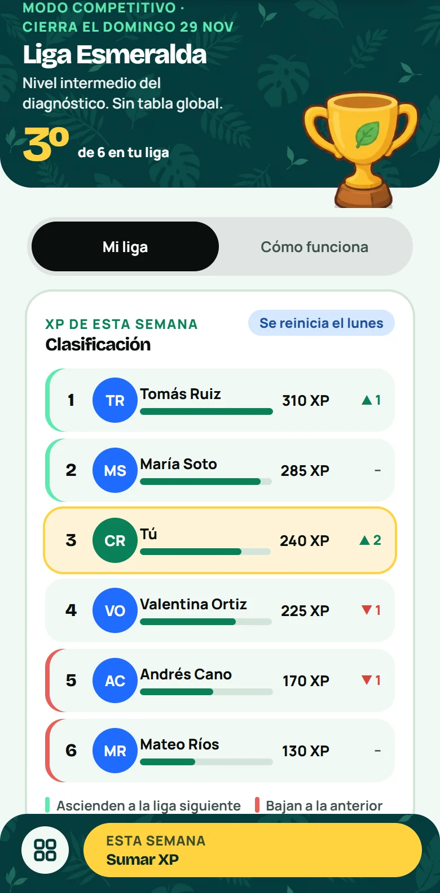
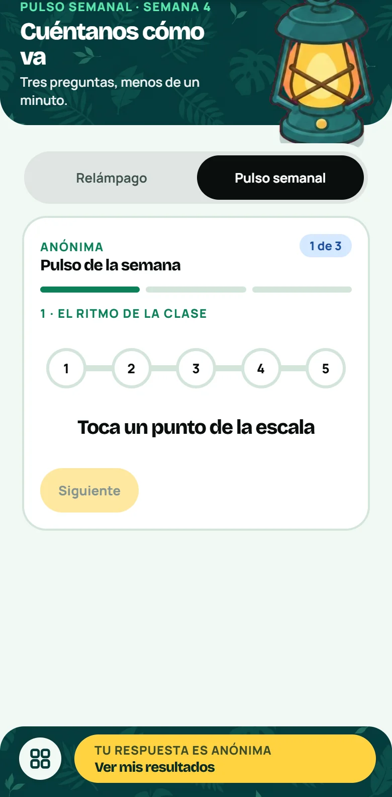
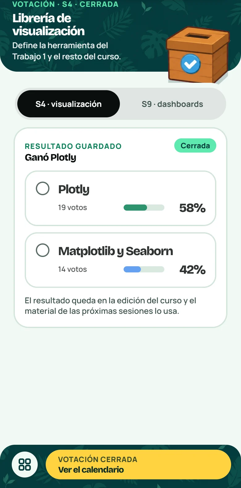

Del dato a la decisión
Presentación del curso
Juan Felipe Martínez Bernal

Es lunes, y el tablero de Marta no cuadra
Caso ilustrativo, con datos sintéticos.
El tablero dice 1.200 ventas. El sistema dice 800.
¿Cuál cifra creerías?
Un JOIN con la tabla de productos repitió 400 ventas que tenían dos registros. Nadie lo notó porque ningún control miraba el total.
Este curso trata de construir flujos de datos en los que se pueda confiar.
Este curso lleva una idea hasta una solución que puedes defender.
Análisis de datos nivel intermedio · Business Intelligence e ingeniería de datos
Un solo proyecto recorre las cinco fases.
Si los datos no sostienen la pregunta, el ciclo vuelve atrás. Eso también es parte del trabajo.
Inspirado en el ciclo CRISP-DM (Chapman et al., 2000), adaptado a cinco semanas.
Dos rieles en paralelo: encuentros y Platzi
Seis cosas que tu proyecto debe poder demostrar
Cada encuentro lo acerca un paso. Verás tu avance frente a tu propio punto de partida.
Veamos cada área, una por una.
Ilustración con valores de ejemplo. Las seis áreas agrupan las evidencias de los diez encuentros del nivel intermedio.
Brief y fuentes
Problema de industria con usuario, fuente plausible y un recorte realista.
La trampa frecuente. Una ambición excesiva. Mejor un flujo reducido que funcione de punta a punta.
Extracción
Datos traídos de una API con fallas manejadas y credenciales fuera del código.
La trampa frecuente. Reintentar sin pausa ni tope. Un reintento prudente espera y se detiene.
Staging y dbt
Transformaciones de la fuente al mart, explicadas columna por columna.
La trampa frecuente. Transformar sin dejar rastro. Cada cambio se documenta para que otra persona lo siga.
Modelo dimensional
Hechos y dimensiones con consultas que no inflan los totales.
La trampa frecuente. Un JOIN que infla totales. Se compara el total antes y después de cada unión.
Calidad y gobernanza
Controles automáticos, calidad medida y acceso definido por roles.
La trampa frecuente. Publicar un indicador sin pruebas, o mostrar datos sensibles en el detalle.
Análisis y defensa
Un resultado con método justificado, reproducible y defendido con evidencia.
La trampa frecuente. Mostrar una simulación como si fuera implementación real. Se distingue lo que corre de lo que se simula.
Cuatro ideas sobre cómo se aprende, y cómo las usamos
De 180 minutos, 95 son para practicar
¿Qué acuerdo del pacto nos orienta aquí?
Data Expedition, la app que usaremos en cada encuentro
Competencias
Una liga semanal y un marcador en vivo. Y tu radar, frente a tu propio punto de partida.
Encuestas
Pulso de tres preguntas, votaciones y censos. Anónimas cuando importa.
Kahoots
Relámpagos en vivo de 60 segundos. Entras con un apodo, sin crear cuenta.
Compites contra tu punto de partida
- Liga semanal: sumas XP practicando
- Marcador en vivo en cada kahoot
- Radar: tu avance, frente a ti mismo

Pantalla real de la app, con datos de ejemplo


Pantallas reales de la app, con datos de ejemplo
Tu voz mueve el curso
- Un pulso anónimo de tres preguntas para ajustar el siguiente encuentro
- Votaciones para decidir las herramientas del curso
- Censo de equipos y entorno
Yo abro la pregunta y veo al grupo, sin nombres en las encuestas
Pantallas reales de la app, con datos de ejemplo
Tres preguntas de calentamiento
Sin presión: solo para ver cómo funciona.
- Escanea el QR
- Elige tu apodo
- Responde en 60 segundos
Tres cosas para arrancar
Entra a la app
Con el correo con el que te inscribiste. En clase también puedes entrar con un apodo.
Abre el módulo M1 en Platzi
Ingeniería de datos: APIs y automatización. Llega con una pregunta de aplicación.
Trae dos problemas de industria
Quién decidiría, qué fuente plausible hay y qué parte necesita actualizarse con frecuencia.
Gracias
Inducción y oportunidades de industria